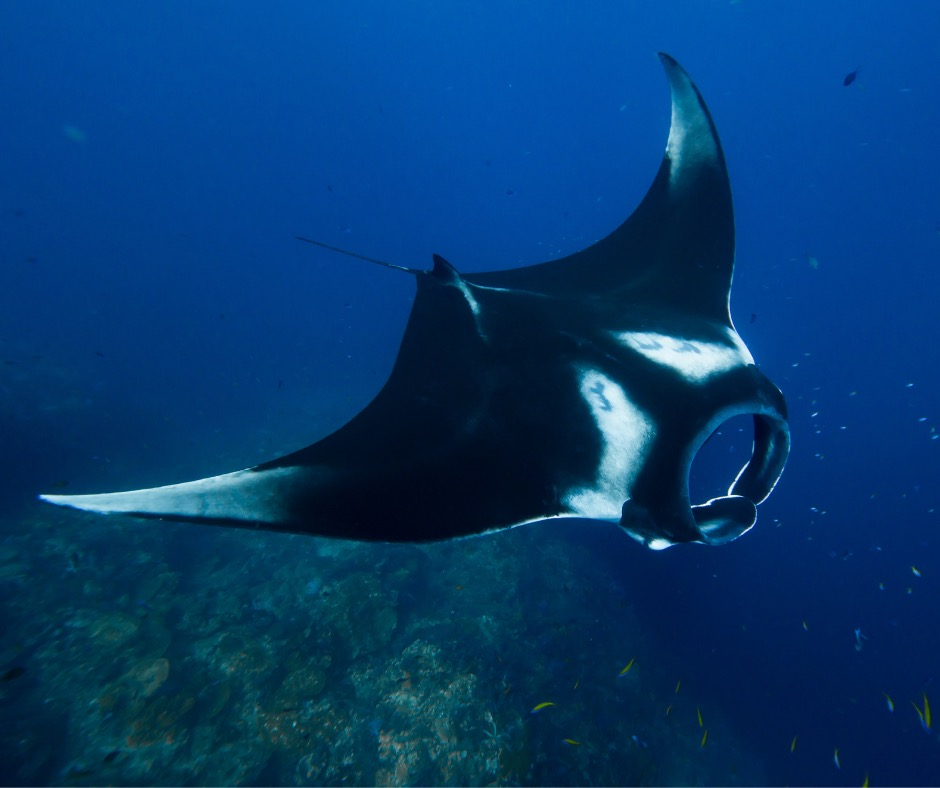

The Basking Shark (Cetorhinus maximus) is a remarkable, marine species known for its colossal size and gentle disposition. These enormous creatures are the second-largest shark species on Earth,trailing only the whale shark in size, Lengths of up to 40 feet or more. With some individuals reaching Despite their imposing appearance, Basking Sharks are filter feeders, primarily consuming planktonic organisms by swimming with their mouths wide open. They possess unique gill slits that can filter astonishing amount of water, Basking Sharks are renowned for their docile nature and are often observed leisurely swimming near the water's surface, which has led to their name. Conservation efforts are crucial for their protection, as they face threats such as habitat degradation and accidental entanglement in fishing gear. Despite their massive size, the Basking Shark is a captivating and vulnerable species that plays a vital role in the marine ecosystem.

The Mola Mola, or ocean sunfish (Mola mola), is a remarkable and unique marine species. holds the title of the heaviest bony fish globally, with some individuals weighing up to 5,000 pounds. Despite their size, Mola Molas are known for their somewhat bizarre appearance,resembling a large floating disc with a truncated tail. They primarily feed on jellyfish and other gelatinous organisms and are often spotted basking at the ocean's surface, hence their name. Mola Molas are found in temperate and tropical oceans worldwide, and their life cycle and behavior continue to be subjects of scientific interest and research.
Manta rays are large, graceful marine animals known for their distinctive diamond-shaped bodies and long, wing-like pectoral fins. They are gentle filter feeders that primarily consume plankton and small fish by swimming with their mouths wide open. anta rays are found in tropical and subtropical waters across the globe, making them a popular subject for marine enthusiasts and tourists. These rays are known for their acrobatic leaps out of the water and intricate patterning on their undersides, which aids in individual identification. Conservation efforts are critical to protect these vulnerable giants from threats such as habitat destruction and the illegal trade in their gill plates.